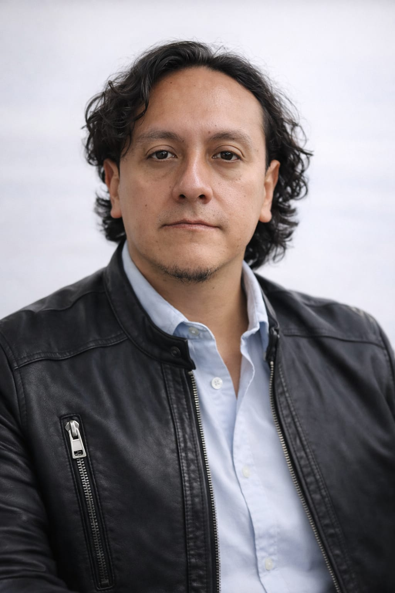

Quito, Ecuador · 1979
Educomunicador, formador docente y músico instrumentista de vientos andinos. Más de una década conectando educación, cultura e identidad.

ECReemplaza con tu foto
La música, la narración oral y la educación no son mundos separados en mi trabajo: son tres dimensiones de una misma búsqueda.
Soy Comunicador Social con Maestría en Antropología Visual por FLACSO Ecuador. Mi trayectoria combina más de diez años en formación docente, diseño curricular y consultoría pedagógica, con más de veinte años como músico instrumentista de vientos andinos y creador de proyectos de arte experimental.
Actualmente soy Asesor Académico en Santillana Ecuador, donde coordino programas de capacitación continua para docentes de EGB, BGU y Bachillerato Internacional a nivel nacional. He publicado tres libros de texto para el sistema educativo ecuatoriano y trabajado como consultor para OPS/PAHO, FIDA/IFAD y Grupo FARO.
Fundador de un proyecto pionero de fusión de vientos andinos con expresiones musicales contemporáneas, integrante del colectivo BARRYO de arte experimental audiovisual, y ganador de la convocatoria Escuelas Abiertas de Arte Actual FLACSO 2017.
Educación & Formación
Comunicación & Cultura
Tecnología Educativa
Idiomas
Asesor Académico / Coach Educativo
Santillana S.A. Ecuador
Diseño y facilitación de programas de formación continua para docentes de EGB, BGU y Bachillerato Internacional a nivel nacional. Acompañamiento pedagógico especializado a directivos e instituciones educativas. Más de 50 instituciones en Sierra, Costa y Amazonía.
Especialista en Evaluación Educativa
INEVAL — Instituto Nacional de Evaluación Educativa
Colaboración recurrente en tres proyectos: elaboración y validación de ítems para el Examen Nacional Ser Bachiller, y capacitación docente como Técnico Formador de Formadores en la región Sierra.
Docente Virtual / Coordinador de Formación
Instituto Tecnológico Superior Poliestudios
Docencia en programas de Educación Superior: Neuroeducación, Liderazgo e Innovación Educativa, Competencia Digital Docente, Educación Inclusiva. Gestión de entornos virtuales de aprendizaje.
Analista de Contenidos Ciudadanos
Grupo FARO
Desarrollo de estrategias comunicacionales para el Área de Democracia, Transparencia y Ciudadanía Activa. Facilitación digital de talleres y laboratorios ciudadanos.
Especialista en Museología Educativa y Mediación Cultural
Fundación Museos de la Ciudad — CAC Quito
Diseño y ejecución del Programa Educativo del Centro de Arte Contemporáneo de Quito. Mediación pedagógica para públicos escolares, universitarios y comunitarios.
Consultor en Comunicación para la Salud
OPS/PAHO — Organización Panamericana de la Salud
Consultoría recurrente en dos proyectos de salud pública para comunidades indígenas de Chimborazo y Pichincha. Capacitación en producción radiofónica y comunicación intercultural.
Consultor en Educación Comunitaria y Comunicación para el Desarrollo
MAGAP / INCCA · FIDA/IFAD — Naciones Unidas
Diseño participativo de materiales educativos para emprendimientos campesinos en 7 provincias del Ecuador. Proyecto financiado por el Fondo Internacional de Desarrollo Agrícola de la ONU.
Fundador e instrumentista desde 2001. Exploración de la fusión de vientos andinos — quena, zampoña, sicu, rondador, pingullo — con expresiones musicales contemporáneas.
Músico invitado en "Uku Pacha" (Colectivo 0° 1533, 2015) y "El Callejón de los Milagros" (Kléver Viera / El Arrebato, 2007). Conciertos con Sal y Mileto, Pléroma y Kooma.
Representó al Ecuador en el XVIII Encuentro de Contadores de Mitos y Leyendas en Buga, Colombia. Integrante del grupo Madre Lengua Cuentería en Quito.
Integrante del colectivo de arte experimental audiovisual con participación en convocatorias nacionales e internacionales. Arte sonoro, memoria e identidad territorial.
Ganador de la convocatoria con el proyecto "Experimentación Sonora, Memoria e Identidades". Exploración de paisajes sonoros y territorios desde instrumentos andinos.
Participación en el Festival Cantos de Libertad junto a la agrupación Nativa, compartiendo escenario con Inti Ilimani y Quilapayún.
"La música andina no es un género — es una forma de estar en el tiempo y en el territorio."
Eduardo Cando · Músico instrumentista desde 2001
Libro de texto: Educación Cultural y Artística — 2.° BGU
Libros de texto: Educación Cultural y Artística — 2.° y 3.° EGB · 1.° BGU
Libro de texto: Educación Cultural y Artística — 2.° BGU
Seleccionado — Escuelas Abiertas de Arte Actual FLACSO
Módulo: Uso de tecnologías de la comunicación para el desarrollo
IA & Docencia
Llevamos más de dos años escuchando que la IA va a transformar la educación. Pero en el terreno, con docentes reales y aulas reales, la pregunta sigue siendo la misma: ¿cómo la uso mañana lunes? Reflexiones desde la formación docente continua.
Metodología
Hay una confusión frecuente: pensar que porque la IA puede generar contenido educativo, el rol del docente se vuelve prescindible. Ocurre exactamente lo contrario. La IA hace más urgente —no menos— la presencia de un mediador pedagógico con criterio propio.
Reflexión crítica
Los modelos de lenguaje fueron entrenados mayoritariamente en inglés y desde perspectivas del norte global. ¿Qué pasa cuando los usamos para enseñar historia o cultura en contextos como el Ecuador? Una pregunta que la educomunicación no puede ignorar.
Práctica docente
No en teoría: en talleres presenciales con docentes de EGB y BGU en Ecuador. Desde generación de rúbricas hasta simulación de escenarios pedagógicos difíciles. Lo que funciona, lo que no, y lo que sigo explorando.
Tendencias
La pandemia aceleró la hibridación de los entornos de aprendizaje. La IA llega a profundizar ese cambio. Para quienes lideramos instituciones educativas, ignorar esta convergencia ya no es una opción neutral: es una decisión con consecuencias.
Ética & Educación
Los estudiantes ya usan IA para hacer tareas. Los docentes lo saben. La pregunta no es si prohibirla, sino qué conversación educativa queremos tener sobre ella. Algunas pistas desde la práctica y la ética de la comunicación.
Artículos completos próximamente · Escríbeme para recibirlos en tu correo
¿Tienes un proyecto educativo, cultural o de consultoría en mente? Me interesa conversar.